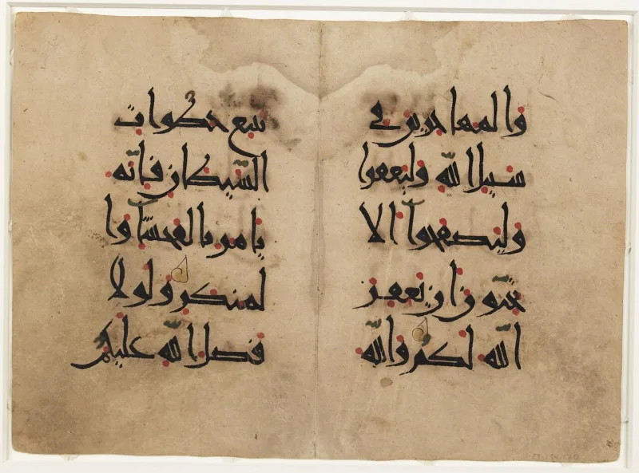

Four witnesses to prove rape, or eighty lashes
UnrefutedNo good counter-argument has been published by Muslim scholars.
What the verse requires
Quran 24:4 requires four eyewitnesses to prove unlawful intercourse. An accuser who cannot produce them receives eighty lashes.
Quran 24:13 applies the same test.
Concede the purpose first
The rule was there to protect. It came after the slander of Aisha.
Its aim was to shield women from loose talk. Say that up front.
It makes the argument stronger, not weaker.
What happened in practice
The old law books put rape, zina-bil-jabr, under the same rules of proof as zina. Pakistan wrote that into the 1979 Hudood Ordinance.
The result is on record. Women who reported rape were charged instead.
Their report was read as an admission of an act they could not prove was forced. It took the Women's Protection Act of 2006 to move rape back into the Penal Code.
The Muslim answer, at full strength
Muslims reply that 24:4 was meant to protect, not to trap. They add that rape could be prosecuted instead as hiraba, violent crime, with no four-witness bar.
And they argue the Hudood Ordinance was bad human legislation rather than true sharia — as shown by the Pakistani religious scholars who supported the 2006 reform.
How strong is this argument?
Strong for you, but it is about application, not intent. The classical manuals did apply the zina bar to rape claims.
The hiraba route was the minority workaround, not the working rule. And when a modern state implemented the classical framework, the predictable injustice happened at scale for 27 years.
Compare Deuteronomy 22:25-27, which declares the victim innocent — "to the young woman you shall do nothing" — with no witness quota placed on her.
What to say
"I know the four-witness rule was meant to stop slander. Can we look at what happened in Pakistan?"


How they answer this — at its strongest
They say the rule was made to shield women from slander, not to trap them.
Muslims respond that the first purpose of 24:4 was to protect. It shielded women from loose charges of adultery. The setting was the slander of Aisha. They add that rape could be tried instead as hiraba, violent crime, with no four-witness bar.
And they argue that the Hudood Ordinance was bad man-made law, not true sharia. The Pakistani religious scholars who backed the 2006 reform show as much. Both sides are set out in the Washington and Lee Law Review article on the Hudood Ordinances at twenty-five years. The 2006 reform debate covers them too.
The verdict
Strong for you on how it worked out: concede the aim of the rule first.
The point about shielding women from slander is genuine, and should be granted. But this case is about what happened next. The old manuals did apply the proof bar for zina, unlawful intercourse, to claims of rape. The hiraba route was the minority workaround, not the working rule. And when a modern state wrote the classical frame into law, the predicted harm happened at scale for 27 years.
The contrast that teaches is Deuteronomy 22:25-27. It declares the victim innocent — to the young woman you shall do nothing. No witness quota is placed on her.
One usage note. Lead with the Pakistan history, which is documented. Grant the anti-slander setting of 24:4 up front. It makes the argument stronger, not weaker.
Sources
- Offence of Zina (Enforcement of Hudood) Ordinance 1979 — text and commentary, Harvard Islamic Law Blog
- 'Twenty-Five Years of Hudood Ordinances — A Review', Washington & Lee Law Review
- Women's Protection Bill (2006) — Wikipedia
- Al Jazeera — 'Pakistan compromises on rape law' (2006)